BLIV
Bag Alive Festival står engagerede og passionerede frivilligkræfter, som sammen
skaber en oplevelse
ud over det
sædvanlige – og alle er velkomne! Det vigtigste er lysten til at blive en del af et større og
mangfoldigt fællesskab.
Her på siden kan du finde info om, hvordan du kan engagere dig netop nu, og hvilke
frivilligtyper-og opgaver vi arbejder med.
FRIVILLIGTYPER
Under festivalen tilbyder vi to typer af frivillige: Almindelig Frivillig og Superfrivillig. Frivilligtilmeldingen til årets Alive Festival åbner d. 15. februar. Tryk på linket og grib muligheden for at blive en del af holdet!
Almindelig Frivillig
Til dig der vil være med på frivilligholdet i tiden omkring festivalen. Du kan som almindelig frivillig enten arbejde: 24 timer før, 10 timer under eller 16 timer efter festivalen. Det får du: Partoutbillet, Frivillig t-shirt i årets Alive design, Forplejning under vagt, adgang til hygge og kaffe i frivilligloungen alle dage.
Superfrivillig
Til dig der vil give den lidt ekstra gas på frivilligfronten omkring festivalen. Du kan som superfrivillig enten arbejde: 40 timer før, 20 timer under eller 32 timer efter festivalen. Det får du: Partoutbillet, 5 ølbilletter, Frivillig t-shirt i årets Alive design, Forplejning under vagt, adgang til hygge og kaffe i frivilligloungen alle dage.
Vi tilbyder alt fra opbygning af pladsen, barvagt, servicevært, backstage, stagehand og meget mere! Hør mere om de forskellige arbejdsopgaver ved at skrive til frivillig@alivefestival.dk eller læs mere inde i vores frivilligsystem HEAP, hvor der er beskrivelser af arbejdsstederne..

365’ER – FRIVILLIG ÅRET RUNDT
Vi elsker at skabe festival sammen med holdspillere, ildsjæle og vaskeægte nørder på alle områder – hele året rundt. Vi søger løbende nye 365’ere, og nedenfor kan du se, hvilke steder vi har åbent for ansøgninger lige nu. Finder du noget som lyder interessant, så skriv kort en ansøgning til frivillig@alivefestival.dk
Divisioner
Er dette ikke noget for dig? så frygt ej! Vi har mange forskellige divisioner hos Alive Festival, og vi er sikker på, at vi nok skal finde noget, der passer dig! Kan du lide at bygge? Er du en knag til at koordinere events? Har du en excel-haj gemt i maven eller er du interesseret i det med sikkerhed? På årsbasis bliver der arbejdet med alt fra sikkerhed til bar, sponsorater, frivillighed, bæredygtighed og meget andet. Alle kompetencer og talenter kommer i spil, når vi sammen laver festival. Skriv til os og hør mere om, hvordan du kan blive en del af holdet på frivillig@alivefestival.dk

Partnerskabsdivisionen
Har du lyst til at være med i en essentiel del af Alive Festival? Har du lyst til at sikre sponsorater, partnere og være det kommercielle led udad til? Så skal du søge plads i vores division Partnerskaber! Divisionen søger helårsfrivillige med kommerciel forståelse, gåpåmod og lyst til at lære at skabe relationer til partnere. Division vil mødes i København, men online deltagelse er også muligt. Lyder dem som noget for dig, så smid en mail til frivillig@alivefestival.dk med lidt om dig selv.
Frivilligdivisionen
Frivilligdivisionen søger 365’ere til at indgå i et af de stærkeste hold på Alive Festival – nemlig dem der sørger for at festivalen får nogle frivillige, og at de altid er glade! Man vil indgå i et alsidigt hold, der har kontakt med alle de andre divisioner. Man vil få erfaring med koordinering, kommunikation, sponsoraftaler, rekruttering og et fedt fællesskab! Divisionen mødes en gang om ugen. Første gang er d. 29 september kl 15:30 på Frontløbernes kontor i Aarhus. Så elsker du at være bindeledet mellem mange, sprede positive vibes og have ansvar? Så send en ansøgning til frivillig@alivefestival.dk!
Bæredygtighedsdivisionen
Bæredygtighedsdivision søger grønne hænder! Alive arbejder altid på at blive så bæredygtig som muligt, så hvis du brænder for miljøet, vil udvikle nye, grønne initiativer og fremme den grønne omstilling på festivaler, så skal du søge en plads hos Bæredygtighed! Divisionen mødes i gennemsnit hver anden uge, og fysisk tilstedeværelse er ikke nødvendigt. Hvis det lyder som noget for dig, så send en ansøgning til frivillig@alivefestival.dk.
INFORMATION OMKRING FRIVILLIG
Vi har samlet en lang række informationer her. Få du ikke svar til dine spørgsmål er du altid velkommen til at skrive til os på frivillig@alivefestival.dk eller læse mere inde i vores frivilligsystem HEAP, hvor al information til frivillige er samlet.
Hvornår åbner frivilligtilmeldingen?
Tilmeldingen til Alive Festival 2023 åbner d. 15. februar. Tryk på linket og vær med når vi i fællesskab laver sommerens festival!
Kan jeg arbejde sammen med mine venner?
Du kan ønske hvem du gerne vil arbejde sammen med, og så gør vi vores bedste for at opfylde jeres ønsker. Vi kører efter først til mølle princippet, så nu før I tilmelder jer nu bedre chance er der for at I kan arbejde sammen.
Vagter og vagtplaner
DDu vælger selv hvilket hold du ønsker at være frivillig på. Vi fordeler vagter ud senest to uger inden festivalens start. Når du er tilmeldt som frivillig kan du under FAQ finde svar på alle spørgsmål omkring vagter, ventetider og vagtplaner.
Hvad er HEAP?
HEAP er det system, hvor du tilmelder dig som frivillig, og vælge dit hold. Det er vigtigt, at du holder dig opdateret i systemet, så du ikke misser nyheder og informationer omkring dit frivillighold og din vagtplan.
Hvor gammel skal jeg være?
Alle frivillige skal være fyldt 15 år Per 27. juli 2023. Ønsker du at være frivillig i baren skal du dog være fyldt 18 år.
Hvordan kommer jeg ind på camping-og festivalpladsen?
For at få adgang til pladsen skal du have et frivilligarmbånd, og for at få adgang til campingpladsen skal du have et campingarmbånd. Camping er gratis for alle frivillige. Du skal blot huske at klikke “ja” når du tilmelder dig, og at medbringe dit eget telt. For de, der skal arbejde før festivalen, vil der også være mulighed for camping før i dagene op til festivalen. Du får udleveret både dit frivilligarmbånd og campingarmbånd i billetvognen ved indgangen. Det er vigtigt, at du medbringer et gyldigt billed-id. Har du en vagt før festivalen åbner skal du skrive til frivillig@alivefestival.dk, og så sørger vi får at du får dit armbånd i tide.

Jeg er desværre blevet syg
Bliver du syg før din vagt, skal du straks kontakte frivilligkoordinatorerne. Bliver du syg under selve festivalen og har hentet dit armbånd skal du møde personligt op på Alives hovedkontor i Plantagehuset, så du ikke fejlagtigt bliver noteret som udeblevet. Du vil selvfølgelig ikke blive straffet for uforudsigelige omstændigheder, men i særlige tilfælde kan festivalen gøre krav på at se en lægeerklæring.
Jeg kan ikke komme alligevel
Udebliver du fra din vagt uden ovennævnte sygemelding bliver du opkrævet et beløb svarende til partoutbillettens pris i døren samt en afgift på 250 kroner. Har du tilmeldt dig som frivillig kan du godt melde afbud. Tilmeldingen er dog bindende efter den 14. Juli 2023. Hvis du melder fra efter denne dato, opkræves der en afgift på 250 kroner.